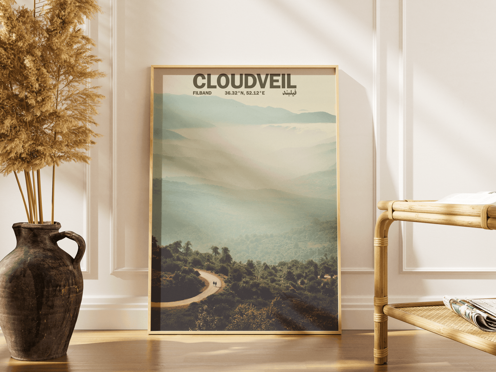
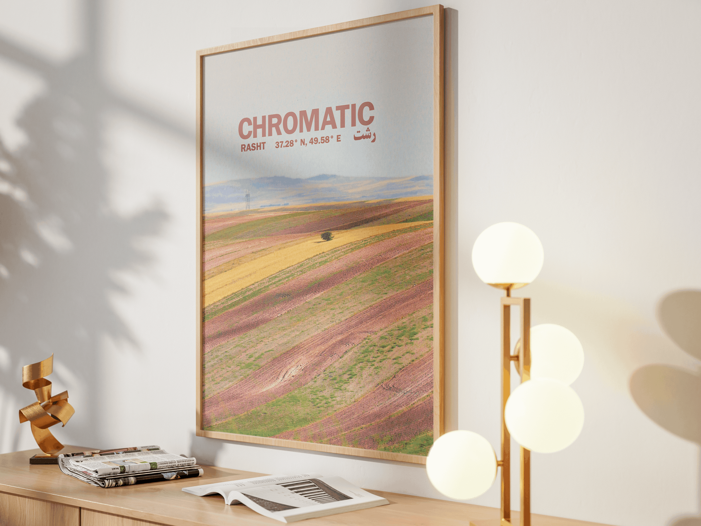
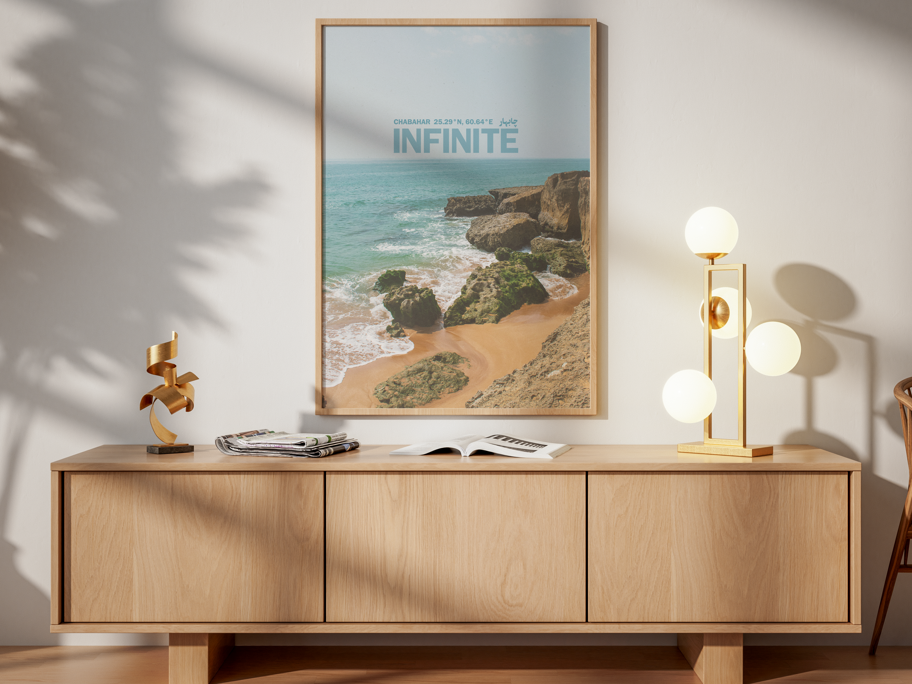

Visual Storytelling
A long-term visual exploration developed through daily experimentation, repetition, and observation.

Developed over seventy consecutive days, this project became an exercise in consistency, observation, and intuitive composition. Each piece responds to a different visual or emotional impulse, allowing the collection to evolve organically through repetition and variation. The process emphasizes experimentation, restraint, and the gradual development of a personal visual language.

